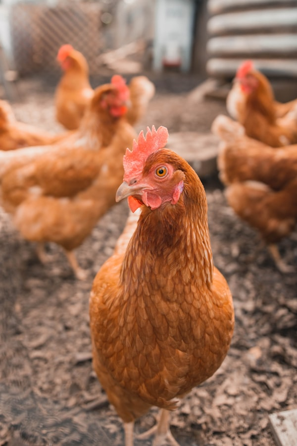
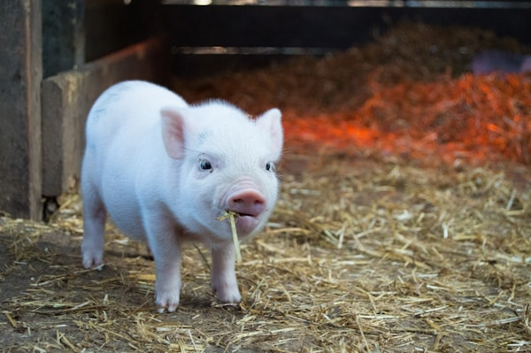
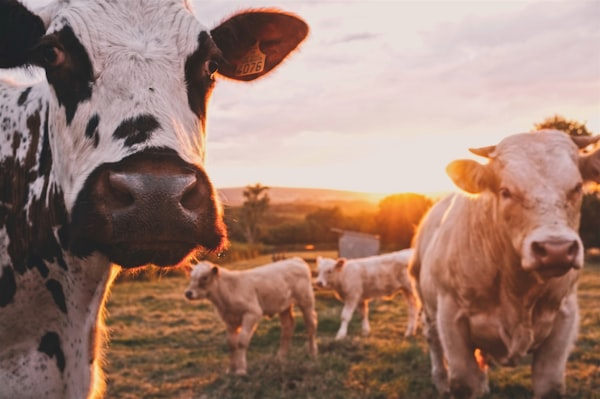
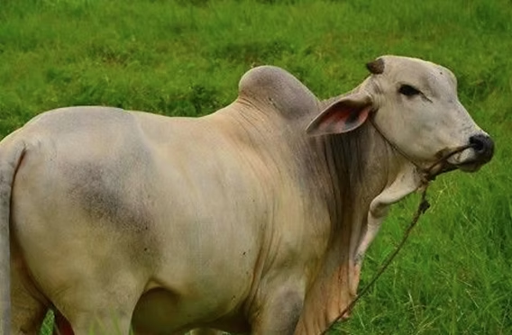
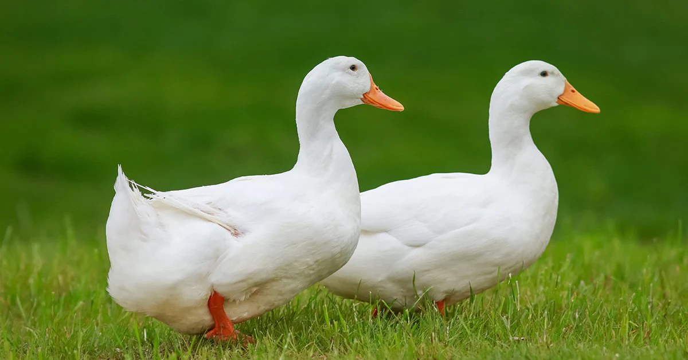

The Pride of the Province
Essential Livestock Heritage
Feeding millions, Pampanga's livestock sector is a cornerstone of food security and economic stability in the region.

Chicken (Broilers And Layers)
Pampanga is a major hub for the chicken industry in Central Luzon. Its massive production of broilers and layers supplies fresh poultry meat and eggs to Metro Manila and surrounding provinces.
Learn More >
Swine / Pigs
Hog raising is deeply integrated into Kapampangan culture and cuisine. Local swine production is vital for beloved traditional dishes such as lechon, sisig, and dinuguan, which are central to Pampanga's identity as the culinary capital of the Philippines.
Learn More >
The Philippine Carabao
Often called the 'farmer's best friend,' the carabao remains a symbol of traditional farming in Pampanga and is a growing focus of government-supported conservation and development programs.
Learn More >
Cattles
Cattle farming is a growing industry in Pampanga, providing beef and dairy products that support local food supply chains and reduce dependence on imports from other regions.
Learn More >
Ducks
Duck raising is a thriving backyard industry in Pampanga, famous for producing balut and salted eggs, iconic Filipino delicacies that are deeply woven into local culture and street food tradition.
Learn More >
Goats
Goat raising is one of the most accessible and profitable small-scale livestock enterprises in Pampanga, valued for both meat and milk production.
Learn More >